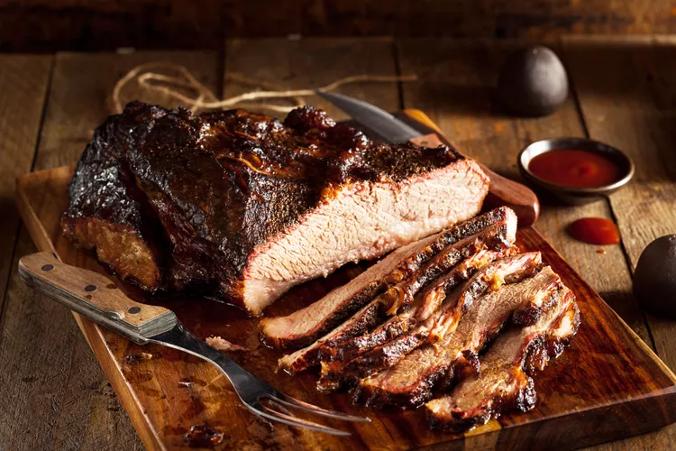

Beef brisket is one of the most flavorful cuts of meat, although it is tough and needs to be cooked in just the right way. It's also a moderately fatty cut of beef, but this can work to your advantage because it tenderizes into succulent, meaty perfection.
Taken from the area around the breastbone, the brisket is basically the chest or pectoral muscle of the animal. The characteristically thick, coarse-grained meat needs a lot of time and low-temperature cooking to break down and tenderize.
Brisket is frequently used for making pot roast, and it's the traditional choice for corned beef. Another very popular technique for preparing brisket is to slow cook it in a barbecue or smoker.
Texas-Style Smoked Brisket
Prep: 30 mins
Cook: 10 hrs
Total: 10 hrs 30 mins
Servings: 6 servings
Ingredients
- 1 untrimmed brisket (8 - 10 pounds)
- 1/2 cup Texas-style brisket rub
- wood chips for smoking, oak, fruitwood and hickory are recommended
Recipe
- Gather all of the ingredients.
- Preheat smoker and add wood chips (follow your instruction manual).
- Rinse and dry the brisket.
- Apply Texas-style brisket rub.
- Place brisket in the smoker for 8 to 10 hours. Keep the smoker temperature at about 225 F to 250 F (108 C to 120 C).
- To increase tenderness, take the brisket out of the smoker once it reaches 170 F, wrap it in aluminum foil and place back in the smoker or in an oven at 180 F to 200 F for the last two hours or until the internal temperature reaches 190 F.
- Serve and enjoy.
Tip
- Typically after 8 to 10 hours, a piece of meat will have absorbed as much smoke as it can, and additional smoking may impart a bitter flavor.
- Check the internal temperature of the meat with an instant-read thermometer.
- There are many ways to enjoy leftover brisket, from scrumptious sandwiches and salads to chilis and pies.